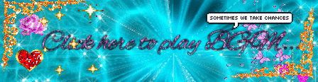
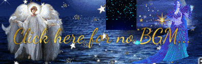

Hey Nils! Happy Birthday, man. I've been aware of your existence in Ici's server for quite a while, but we've only really started interacting with each other this year, and I'm so glad I decided to! You're fun to talk to, and I'm really glad we were able to share a common interest in one of my favorite stories. I really enjoyed your Blue Archive streams and your insightful commentary on the characters and plot. Your birthday is a perfect occasion to celebrate the great person you are. I hope this day brings you all the joy and happiness you deserve. May it be filled with laughter, love, and maybe a few surprise moments that make it truly special. Here's to another 60 years. Cheers!
may your day be full of what you cherish, surrounded by who you need and those who love you dearly, happy birthday
To our precious Professor!
I wanted to wish you a happy birthday, I wish you so much happy happiness, joy and prosperity in every aspect of life you undertake. May your road lead to much laughter.
-The local paleontologist <3
Happy Birthday, Nils!!! Cat boyo, I'm very happy that I met you all that time ago <3
You are a wonderful and fun person to talk to, and you've helped me a lot over the year or more that we've known each other, especially with my motivation and confidence!
I really appreciate you so much, and I hope you have a wonderful birthday!!!!
Hey, Nils! It's your day of birth! I want to know that so many of us loves you and that you are cherished! I'm so genuinely happy to have met you and only ever wish for your happiness. <3 If I could, I would give you the biggest hug and spin you around! Take care of yourself, you silly green cat!
Hey Nils! You're amazing and I hope you have a wonderful birthday! Let's play more mahjong together sometime.
Happy Birthday, Nils! I hope today has been a good day so far, and that it continues to be good!
Hey buddy, I don't have a lot to say that I didn't already so I'll keep it brief. You're loved more than you will ever know by more people than you think. You'll be alright. I believe in you.
Happy Birthday
Aryn
Happy Birthday, Nils! You’re an amazing person and I’m so lucky to be able to be called your friend. Have a great day, mister cringe ❤️
I may not know you for long but happy birthday Nils! :3
The year has been rough so I hope you get to enjoy festivities with the people you care the most <3
Hi Nils, happy birthday!
Hope you have a great day and get lots of rest cuz you do need to rest more often. Although I do miss your streams, hopefully soon I can tune in and go back to class :D
You are pretty chill, have an amazing birthday:)
Hi i'm Steve! First of all... HAPPY BIRTHDAY PROFESSOR NILS! (*places apple on your teachers desk*)
I hope you have been having a nice day, celebrating this special occasion today!
Go and treat yourself to some nice food, or things that simply make you happy... You deserve it!
And thank you for all the awesome DnD Sessions Mr.DungeonMaster, it's been REALLY fun and very creative!
So many great moments and stories... And i'm excited for more of course! And being set on fire (again)! Poor Kai...
Have a wonderful day of birth and MUCH love!
HAPPY BIRTHDAY MISTER NIIILS, I hope you have the bestest day and eat lots of good food!! We all appreciate you so much!!
Happy birthday Nils! Congrats on another year!
NILS NILS NILS NILS happy birthday!!! yayayayayay thank you for being my lovely friend mr professor. i appreciate you so much~ i hope you have the best of birthdays and i will make it out to you to give you the biggest of hugs soon! this is a threat!
Yoyo dude! Happy Birthday! Hope your year and bday is super fun dude! I pray that you have more ups than downs this year and I do hope your personal game project turns out well! I know I haven't been consistent in contact, but I hope your special day is awesome!
Happy Birthday, Nils! Although I don't know you well, I just wanted to wish you a very happy birthday! I hope this year treats you well! I HOPE YOU GET TO EAT LOTS OF YUMMY FOOD!!
Sending you the biggest and best birthday wishes Nils! Hope ya get to spend the day happy, relaxed, perhaps with your favorite snacks, and your closest of friends! Cheers to another year of adventures, growth, and beautiful moments. Happiest of birthdays! 🎉🥳🎂
It’s time to get corny hehe happy birthday Mr.Professor !!! !
It’s been already about 2 years since I’ve met our local green cat, and it feels both like it was yesterday, and like it’s been ages by now. I remember being drawn to you by this special spark of yours, and it’s still as bright as the first day. Whenever you are around, I just know I'll have the best time, because you make people feel loved and cared for, and I’ll always be grateful for your kindness. In return, I wish for you to always be able to find a glimmer of hope, pampering you with the same fondness people think of you with.
We love and cherish you, you silly cat.
Hey Nils ♥ Things have been rough, but I want you to have the most special day. You deserve the world! Happy Birthday!
hey nils happy birthday! im really happy youre feeling better, and hope next year and the ones to come look up for you. id really love to hang out in person, or play more league with you 🎉
Happy birthday Nils! I'm happy to have gotten to know you better over the last year!
Happy Birthday Nils! I wish you happiness and success in all your endeavors and I’m glad to be able to call you my friend. Best Wishes from your local pink catboy
Hey Nils~
From the moment we met I knew you were special, and you have never failed to prove that to me on a daily basis. You are a great person, caring, kind and comforting, you feel like home to me. Thank you for being you.
It's been a rough year but hey- you are gonna be okay, you're not alone anymore.
I wholeheartedly believe your life will be bright ahead, and im very excited to see just how far you'll go, the path you'll take and the memories you'll create. And as always, i'll be happy to tag along and cheer for you all the way to the stars.
To the kindest, most adorable professor out there, the happiest of birthdays, always.
Love you,
-Daiki
waah, happy birthday, ty for the amazing year and for everything! I wish the next one is gonna be awesome tooo!
Happy birthday Nils! We haven't known each other for too long but I've really come to appreciate you over this time, stay awesome.
Happy birthday comrade!!!!!!!!
I put two reminders on my calendar in case I forget... I am dying from finals but I wish you a very day even though you’re cringe(positive)!!!!! I hope this helps you remember that a lot of people are looking out for you!
You have to take care of yourself....... or else........so we can devise evil plots (work hard on our dreams) in the future 🫡
happy birthday nils!! i hope you know how much i appreciate your friendship, and even if we dont talk as often as id like i hope you know that i am always cheering you on. you are a wonderful friend and a pleasure to have around. enjoy your day, you better treat yourself to something nice!!!
Happy Birthday Nils! Hope you having a great birthday, don't push yourself too hard, take care of both your physical and mental health. Next year gonna get better and wish you can keep doing stuff you enjoy.
HAPPY SPAWNING DAY NILS!! Hope you have a wonder filled day~,
Happy Birthday Nils
HAPPY BORKDAY NILS!! It's been great having you around to help me understand things in Final Fantasy XIV! I hope you have an amazing day and spend it with loved ones!!
this page comes with background music!
(there's a mute button at the top left corner)


(also this doesn't really work on mobile)
coded by coded by A4 glitter buttons by skadifan
organized by daiki
bad ideas by ici